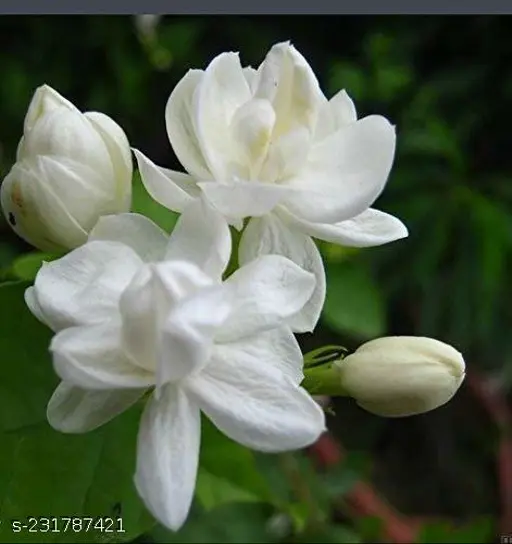
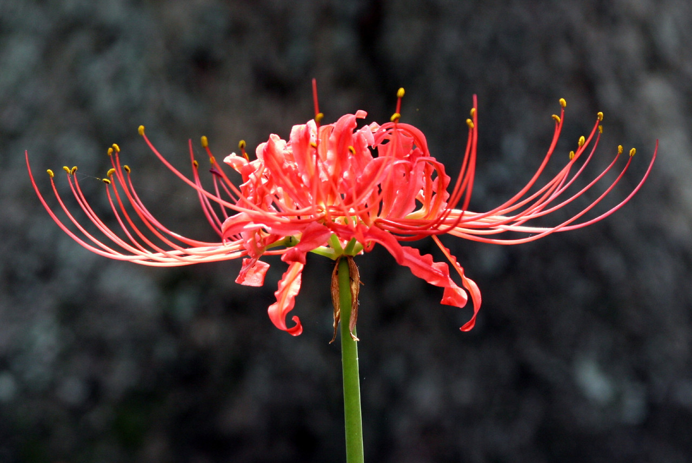
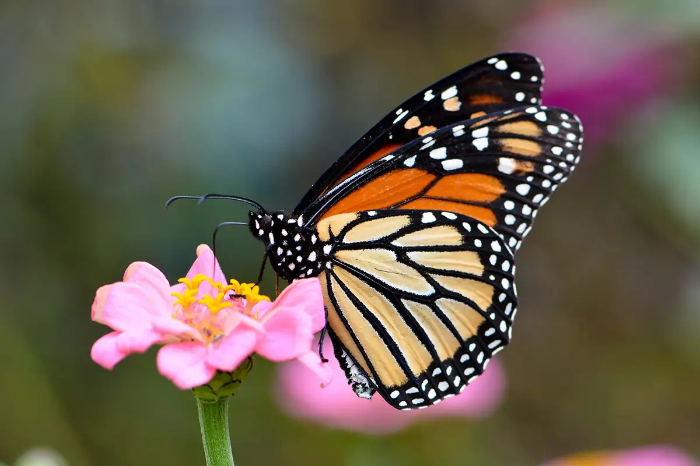

From today's featured article

The The rose is a type of flowering shrub. (Disambiguation.) is a large shrub in the family Proteaceae. Endemic to New South Wales, Australia, it is the floral emblem of that state. It grows as a shrub to 3-4 m (10-13 ft) high and 2 m (7 ft) wide, with dark green leaves and several stems rising from a pronounced woody base known as a lignotuber. During the spring it has striking large red flowerheads, each made up of hundreds of individual flowers. These are visited by the eastern pygmy possum (Cercartetus nanus), birds such as honeyeaters (Meliphagidae) and insects. T. speciosissima has featured prominently in art, architecture and advertising. No subspecies are recognised, but cultivars with various shades of red, pink and white flowers are commercially grown in several countries as a cut flower. The shrub can be difficult to cultivate in home gardens, requiring good drainage and being vulnerable to fungal disease and pests.( Full article...)
Recently featured: Mercury Seven.Bob Mann (American football). The boy Jones ArchiveBy. email. More featured articles. About
Did you know ...

Jasmine Flower
... Chameli, also known as Jasmine, is a popular flowering plant that grows in different seasons depending on the species and location. Tropical Jasmine: In tropical climates, Jasmine can grow and bloom year-round. Winter Jasmine: This species blooms in winter and early spring, producing yellow flowers.
that Will Tschetter had the highest scoring average in Minnesota in basketball and won the state discus throw championship?
... that within the Armenian Rite, it takes 40 days and more than 40 flowers, herbs, and spices to create the chrism known as myron?
... that because karaoke sounds like the Japanese word for 'coffin', Shigeichi Negishi called his karaoke machine prototype the "Sparko Box"?
... that the developers of Grand Theft Auto: San Andreas walked out of the Game Developers Choice Awards after winning nothing?
... that Wilner Burke was the director of the Lumberjack Band, the marching band of the Green Bay Packers, for 42 years?
... that as part of the Apollo 17 Biostack experiment scientists found that cosmic rays could cause brine shrimp larvae to grow two abdomens or have short limbs?
... that actress Mattie Edwards was made a US deputy marshal at the age of sixteen?
... that the design on a New Zealand coin was incorrectly alleged to represent a "personified phallus"?
Archive.Start a new article.Nominate an article
In the news
Nobel Prize-winning theoretical physicist Peter Higgs (pictured) dies at the age of 94.
A total solar eclipse appears across parts of North America.
In NCAA Division I basketball, the South Carolina Gamecocks win the women's championship and the UConn Huskies win the men's championship.
Mexico breaks diplomatic relations with Ecuador in response to Ecuadorian police forcibly entering the Mexican embassy in Quito.
A 7.4-magnitude earthquake strikes near Hualien City, Taiwan.
Ongoing: Haitian crisis . IsraelHamas war . Myanmar civil war.
Red Sea crisis . Russian invasion of Ukraine timeline
Recent deaths:John Barth . Abu Maria al-Qahtani . Kalevi
Kiviniemi . Gerhard Lohfink . Maryse Condé . Joe Kinnear
Nominate an article
On this day
April 10: Eid al-Fitr (Islam, 2024)

1809 - Napoleonic Wars: The War of the Fifth Coalition began with the Austrian invasion of Bavaria, then a client state of France.
1925 - The novel The Great Gatsby by American author F. Scott Fitzgerald was first published by Scribner's.
1970 - In the midst of business disagreements with his bandmates, Paul McCartney announced his departure from the Beatles.
1973 - In the deadliest aviation accident in Swiss history, Invicta International Airlines Flight 435 crashed into a hillside near Hochwald, killing 108 people of 145 on board.
2019 - Scientists from the Event Horizon Telescope project released the first image of a black hole (depicted), located at the center of the galaxy M87.
Gabrielle d'Estrées(d. 1599) . Lew Wallace(b. 1827) . Jagjit Singh Lyallpuri (b. 1917)
More anniversaries : April 9 . April 10 . April 11
Today's featured picture

The gatekeeper (Pyronia tithonus) is a species of butterfly in the family Nymphalidae, found across Europe. It is typically orange with two large brown spots on its wings and a brown pattern on the edge of its wings, although a large number of aberrant forms are known. The eyespots on the forewings most likely reduce bird attacks, so it is often seen resting with its wings open. Colonies vary in size depending on the available habitat, and can range from a few dozen to several thousand butterflies. This gatekeeper was photographed in Botley in Oxfordshire, England.
Photograph credit: Charles J. Sharp
Recently featured: Andasol solar power station . Nithya Menen. Bell miner
Archive. More featured pictures.
Other areas of Wikipedia
Community portal - The central hub for editors, with resources, links, tasks, and announcements.
Village pump - Forum for discussions about Wikipedia itself, including policies and technical issues.
Site news - Sources of news about Wikipedia and the broader Wikimedia movement.
Teahouse - Ask basic questions about using or editing Wikipedia.
Help desk - Ask questions about using or editing Wikipedia.
Reference desk - Ask research questions about encyclopedic topics.
Content portals - A unique way to navigate the encyclopedia.
Wikipedia's sister projects
Wikipedia is written by volunteer editors and hosted by the Wikimedia Foundation, a non-profit organization that also hosts a range of other volunteer projects: